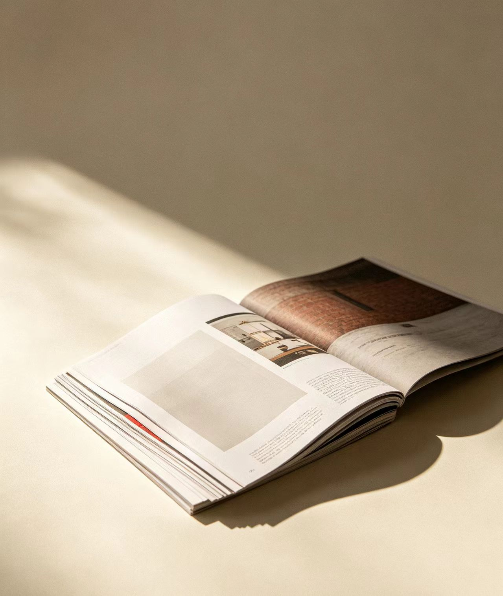
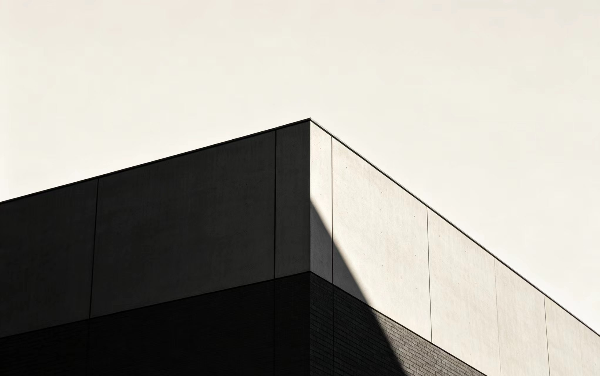
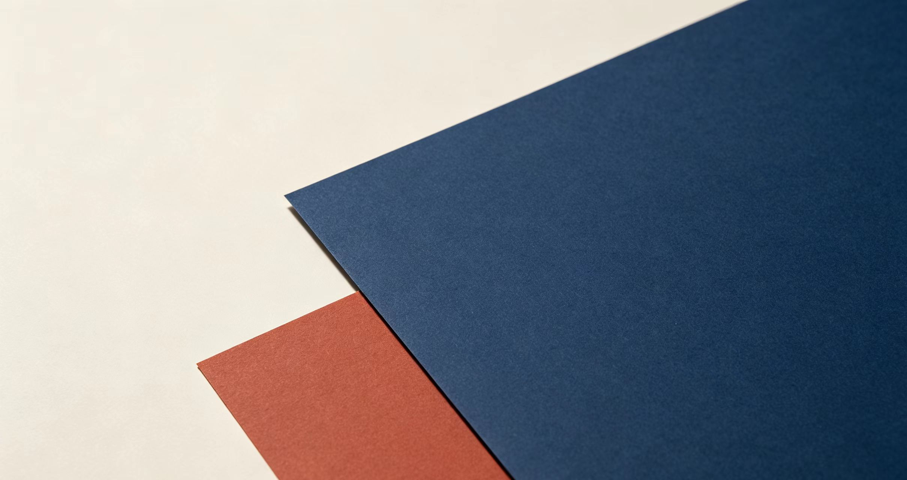
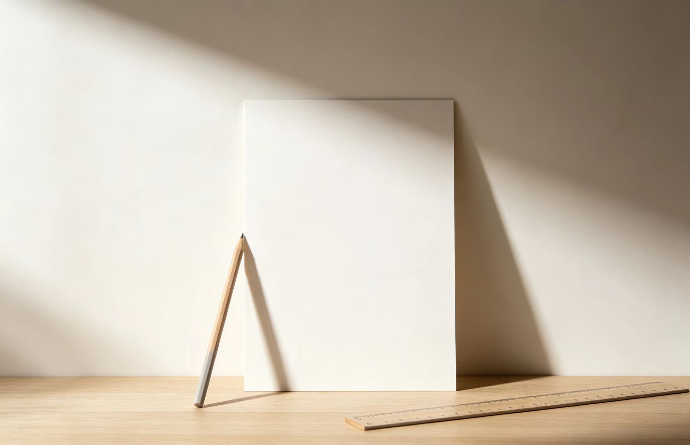

本期特稿
直角作为一种态度
圆角是默认，直角是选择。当所有界面都在软化边缘， 保持锋利本身就是一种声明。这篇文章梳理了从包豪斯到 当代网页的直角谱系，以及它为什么在今天重新变得有意义。

本期特稿
圆角是默认，直角是选择。当所有界面都在软化边缘， 保持锋利本身就是一种声明。这篇文章梳理了从包豪斯到 当代网页的直角谱系，以及它为什么在今天重新变得有意义。
A

一切对齐都有来源。理解列与栏，才能理解页面为什么"稳"。
B

两个对立色同时出现时，决定成败的不是色相，是比例。 砖红与藏青在这套系统里始终不同时大面积出现。
克制不是少，是每一处都恰好。— 编辑手记
C

先定比例，再放内容。布局在图片缺失时也应该成立。
D
大写小标签、字距、栏宽限制——这些不是装饰，是阅读节奏。